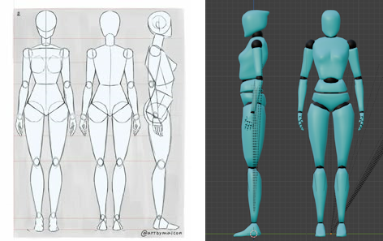
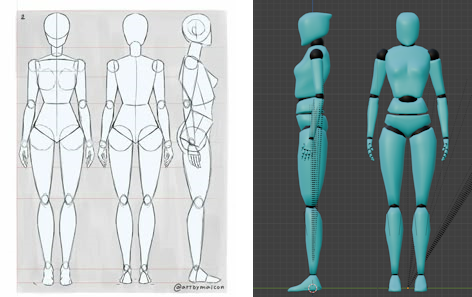

About the project
This was a school project I worked on during summers. It was a way for me to hone my skills and test my limits while working on things that interested myself. Also did a deep dive into how PhysX handles stuff so I could replicate some interactions.
What I did
For this project I wanted to create a character controller that had free movement options on unconventional surfaces such as walls and ceilings. I tested out different gravity related themes and created two gravity powers for the player to use: Kinematic and Statis.
Former can grag objects from afar and launch them and the latter could hold them in place, frozen in space. I also implemented a resource system for health, stamina and gravity power. It was supposed to be a frame for an action game, so I created a damage system that took in account the mass and velocity of objects. This of course meant that there needed to be enemies, so I created some that used A* pathfinding. The enemies and players used hierarchical statemachines for their functionalities.
I got stuck and years later I picked this project back up again and managed to reach my goals on the movement. I then created a crash test dummy model to practice animating and modelling with so the capsule could retire.
 
